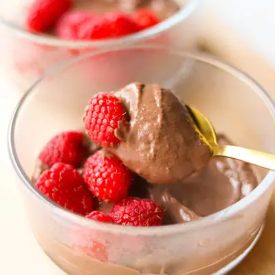

Chocolate Tofu Pudding

Ingredients
- 14 ounce silken tofu
- 3 ounces semi-sweet chocolate (see note)
- 1/4 cup unsweetened cocoa powder (20g)
- 4-5 soft medjool dates (see note)
- 1 teaspoon vanilla extract
- 2-3 tablespoons milk (optional for a looser texture if desired)
Steps
- Melt the chocolate:Microwave method: Place chocolate chips in a microwave-safe bowl. Heat in 20-second bursts, stirring between each, until fully melted and smooth.Stovetop method: Place chocolate chips in a heatproof bowl over a small pot of gently simmering water (make sure the bottom of the bowl doesn't touch the water). Stir until melted and smooth.Set the melted chocolate aside to cool slightly.
- Blend Until Smooth: In a blender or food processor, combine silken tofu, cocoa powder, melted chocolate, dates, and vanilla. Blend until completely smooth.
- Adjust Consistency: If too thick, add 1 tablespoon of milk at a time and blend until creamy.
- Chill and serve: Scoop the pudding into bowls or jars. Refrigerate for at least 30 minutes to help it firm up a little.
- Optional toppings: Top with fresh berries, a sprinkle of cocoa powder, mini chocolate chips, or a dollop of whipped cream for extra fun.
Recipe by Min Kwon · Kidfriendly Meals, from MJ and Hungryman. Saved here for personal use; the original has the full notes, tips and photos. Open original